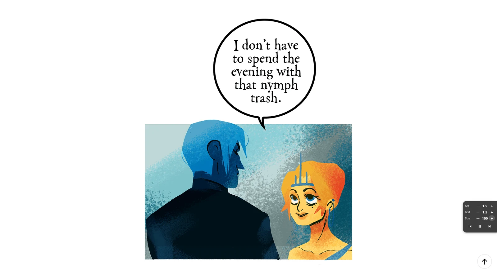
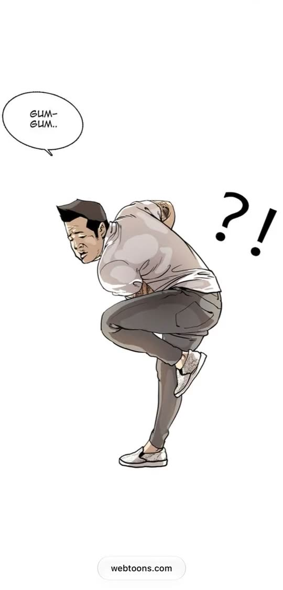

How to install AutoWebtoon: webtoon auto scroll for PC, Android and iPhone
Scrolling with one hand while you eat, or holding your phone up in bed, gets old fast. AutoWebtoon scrolls for you, one panel at a time.

How is it different from a normal auto scroll?
A normal auto scroll moves down at one speed. Panels get cut in half, and a panel full of dialogue slides away before you finish reading it.
AutoWebtoon stops on each panel:
- It stops with the panel centered on your screen, so nothing is cut off.
- A panel taller than your screen is shown in parts, one after another.
- It stays longer on panels with a lot of text and moves quickly past panels with only art.
- When the episode ends, it goes to the next one (you can turn this off).
- Tap the screen to pause, tap again to keep going.
You can change how long it waits so it matches your reading speed.
Where does it work?
WEBTOON (webtoons.com), Naver Webtoon and Kakao Webtoon. Use Chrome on a PC, Firefox on an Android phone, or the App Store app on an iPhone.
Install on a PC (Chrome)
- Open Chrome on your computer.
- Go to the Chrome Web Store page for AutoWebtoon (button below).
- Click the blue Add to Chrome button, then Add extension.
- Open any episode on webtoons.com. It starts scrolling on its own. Press the space bar or click the page to pause.
Install on an Android phone (Firefox)
On Android it runs inside the Firefox browser. Chrome for Android does not support extensions, and it does not work inside the WEBTOON app.
- Install Firefox from the Play Store.
- Open this page in Firefox, or open addons.mozilla.org in Firefox and search for AutoWebtoon.
- Tap the blue Add to Firefox button, then Add.
- In Firefox, open an episode on webtoons.com and tap the comic once. It starts scrolling.
If you tap the add-on link in Chrome, you will only see "Download Firefox". Open the link in Firefox to see the Add button.
Install on an iPhone (Safari)
On iPhone it runs in Safari.
- Search for autowebtoon in the App Store and tap Get.
- Open the iPhone Settings app and scroll down to Apps.
- Tap Safari, then Extensions.
- Tap AutoWebtoon and turn on Allow Extension.
- Set webtoons.com (and the other webtoon sites listed) to Allow.
- In Safari, open an episode on webtoons.com and tap the comic once. It starts scrolling.

Questions
Does it send what I read anywhere?
No. The panel and text counting all happens on your own device. It does not save the art or keep a list of what you read.
Is it made by WEBTOON?
No. It is made by one independent developer and is not affiliated with WEBTOON, Naver or Kakao.
One last thing
Every series draws its panels a little differently, so on some series a panel may stop in an odd spot. If you see one, leave the series name in a review on the store where you got it, and I will fix it.